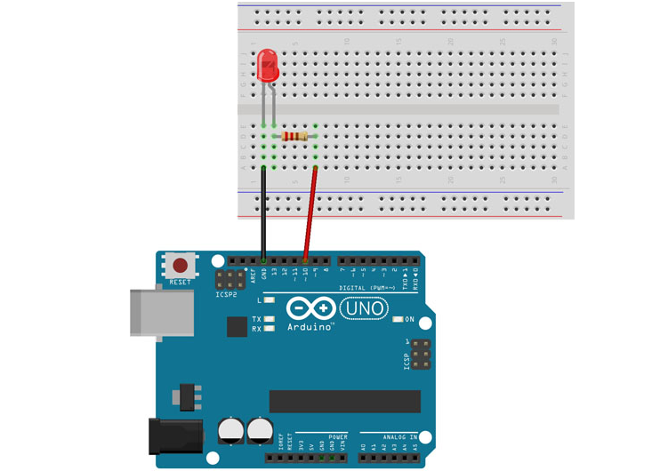
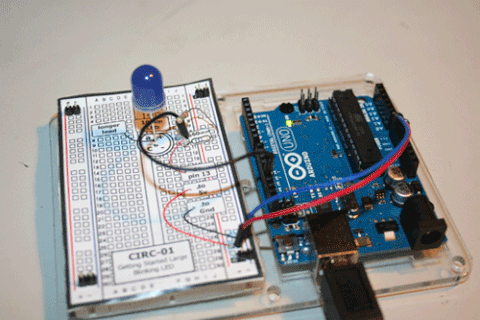

Programando o arduino para receber comandos via serial
Para conectarmos o arduino com o ruby, primeiramente você tem que enviar o código do procotolo Firmata para a placa, assim ela irá receber comandos via serial. Para fazer isso, siga os passos:
Conecte o arduino no seu computador.
Abra a sua IDE Arduino.
Vá em ferramentas e selecione a sua placa como sendo Arduino Uno.
Selecione a porta em que a placa está na opção porta (geralmente ela é identificada como ttyUSB0).
Vá na opção Arquivos, selecione a opção Exemplos e vá até a opção StandardFirmata.
Envie para a placa o código que foi gerado quando você clicou na opção.
Após realizar esses passos, a sua placa estará "escutando" comandos que serão enviados via serial, pois o código do StandardFirmata fica rodando na placa e permite que comandos via serial sejam passados e executados na placa.
Realizando a conexão do ruby e o arduino
Monte esse circuito:
Abra o terminal e insira o comando: gort scan serial
Veja a porta que a placa está conectada (geralmente ela é identificada como ttyUSB0).
Abra o VS Code e crie um arquivo com o nome blink_led.rb, por exemplo.
Insira o seguinte código:
require 'rubygems'
require 'arduino_firmata'
arduino = ArduinoFirmata.connect "/dev/ttyUSB0"
#ACENDER E DESLIGAR O LED
arduino.pin_mode 10, ArduinoFirmata::OUTPUT
stat = true
loop do
puts stat
arduino.digital_write 10, stat
stat = !stat
sleep 1
end
Abra o terminal do VS Code e execute o código: ruby blink_led.rb
Veja o resultado:
Pronto! A conexão do ruby com o arduino através do framework foi realizada com sucesso. Agora você pode fazer diferentes circuitos e executar o código através do ruby. Para mais exemplos, vá até a aba Exemplos.